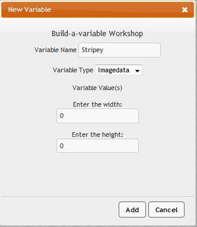
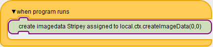
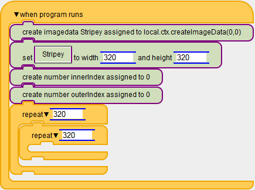
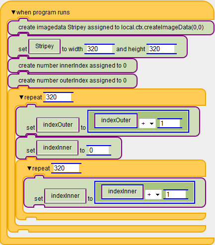
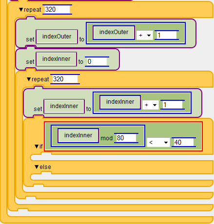
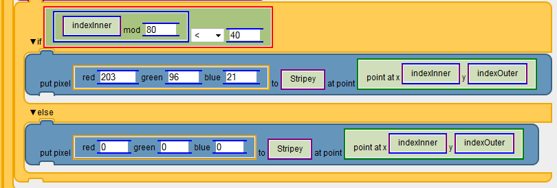
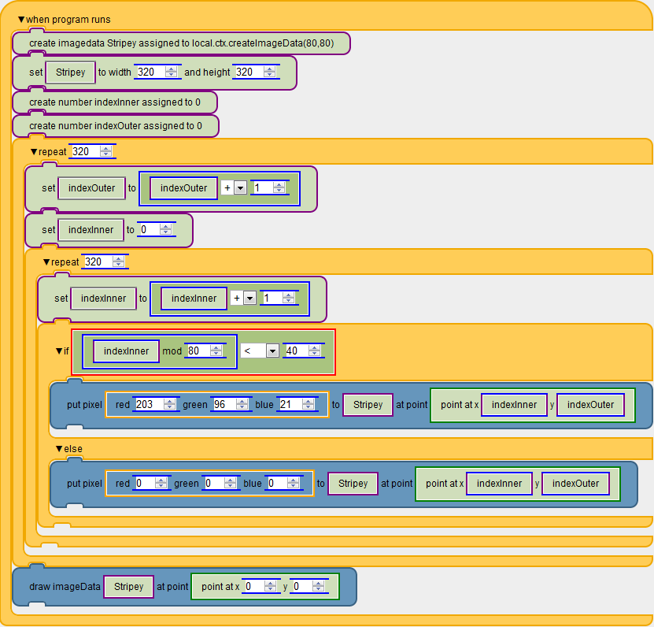

Welcome to project engage programming! This short tutorial will explain the basics of writing programs in this environment. In this tutorial, we will draw simple stripe pattern.
When you start the programming environment, you should see an empty space to build your program in, and a menu containing various blocks to build your program from. Start by opening the "Control" menu and drag the "when program runs" block into the workspace. This block will execute when the "Run" button is pressed.
Next, we will need a surface to build the pattern on. Open the variable menu and click the "make a variable" button. The first varaible type we need is an imagedata, named Stripey. Set the starting values to 0 and 0.
Next, we need to create our variable in the program so drag the "create imagedata Stripey..." block under the when program runs. And now in the big area we should have this.
Then we can set "Stripey" to a width and height of 320. Next, we are going to loop through every single pixel in the image data. First we are going to need counters that keep track of where we are in the loop. So create two new number variables (indexInner, indexOuter), set them both to zero, and drag them into the code. Now, add two repeat loops from the control menu to the bottom of your script. Put one inside the other. Set both of the slots to 320.
Next we need to have our counters increment every time we run the loop. So drag a set block under each loop. For the first loop, we want to change the indexOuter by one so on the left side drag the variable indexOuter, then on the right drag a "+" block from under the Math section. Then within this block the left should be an indexOuter and we should add 1 to it. Do the same for the inner loop for innexInner. Also we are going to need to reset the indexInner each time so right above the second loop set the indexInner to 0.
For this program, we want to draw a burnt orange pixel if the remainder of the x-index, indexInner, divided by 80 is less than 40. This will create a fourty pixel wide burnt orange stripe to occur every 40 pixels. To do this, add an "if else" block from the control menu to the inside of your loops. Within the if statement slot, put a "<" block from the math menu. On the right of the "<" put "40". On the left, put a "mod" block from the math menu. In the left argument of the mod, put the loop index of the inner loop, indexInner. For the right argument, put "80". This will find the remainder when the indexInner is divided by 80, and check if it is less than fourty.
We're almost done! If the x-index, indexInner, divided by 80 is less than 40, we should put a burnt orange pixel on the image data. In the top section of the if statement, put a "put pixel" block from the image manipulation menu. For the first slot, put a "red _ green _ blue _" block from the image manipulation menu. Set the red to 203, green to 96, and blue to 21. For the "to" argument of the put pixel block, put the image data we created at the beginning of this tutorial, Stripey. For the point, add a point block from the point menu. For the x argument of the point, put the loop index from our outer loop, indexOuter. For the y argument, put the loop index from our inner loop, indexInner. This will put a burnt orange pixel to the image if we are drawing a stripe.
Now, put the exact same thing for the else slot of the if statement, except instead of burnt orange colors, put all three colors at zero. This will put a black pixel to the image data if we are not drawing a stripe.
Finally, after the loops, put a "draw imageData" block from the image manipulation menu. For the first argument, put the imagedata object we created at the beginning of this tutorial, Stripey. For the point, put a point object from the point menu. Set both arguments on the point object to zero. The completed program should look like this:
Now press run. If you did everything right, it should look like this:
If you have problems, check that you did everything right. Look at a correct version of this program.
To see some more exciting things you can create with this environment, look at the demos page